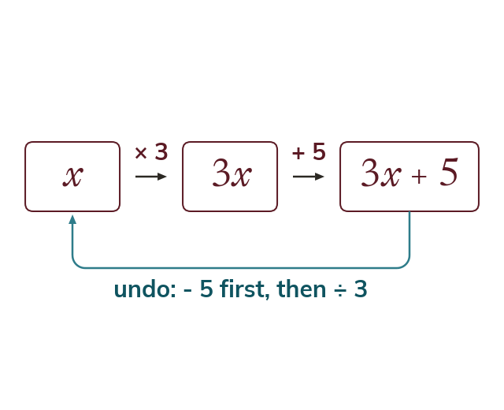
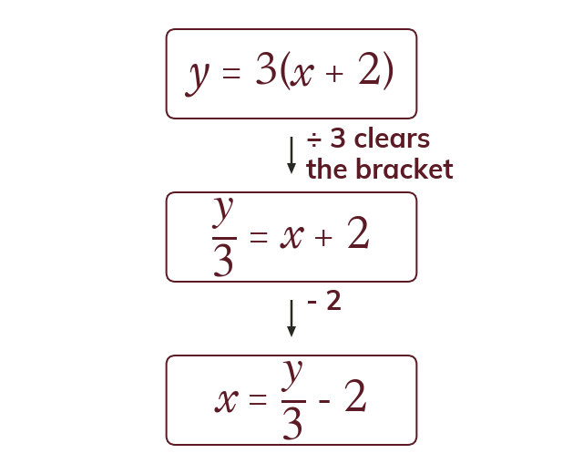
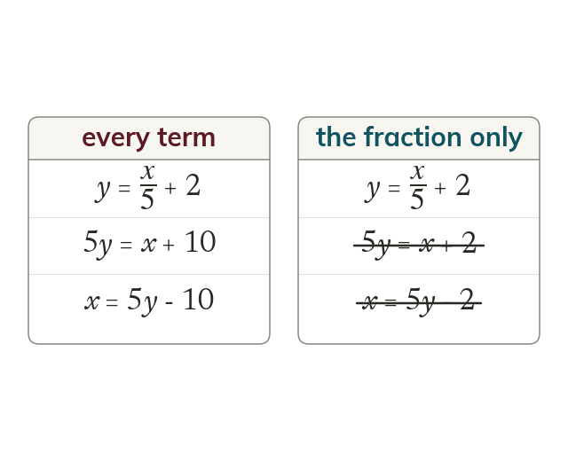
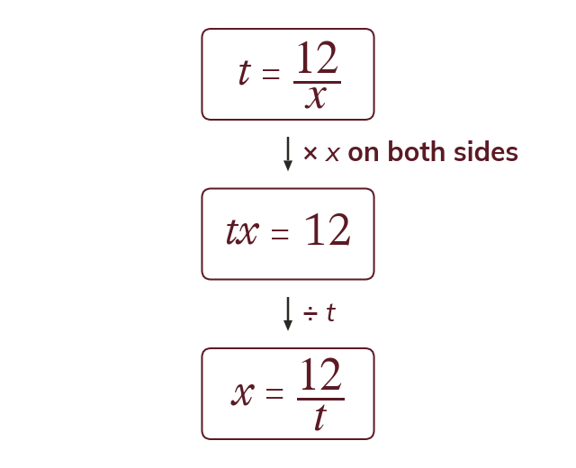

Undo in reverse order
A multi-step rearrangement undoes the operations in the reverse of the order they were applied. The operation furthest from the wanted subject is undone first.
Most real formulae, like the one converting Celsius to Fahrenheit, are built in several steps. Undoing those steps in reverse order turns any of them round completely.
Work down the page at your own pace. Write every answer in your book first, then click to check it.
Read each card, then follow the worked examples one step at a time.

A multi-step rearrangement undoes the operations in the reverse of the order they were applied. The operation furthest from the wanted subject is undone first.

If the subject is inside a bracket, clear the bracket first. Only then move the number inside it.
Pick an answer. If it's wrong, the feedback tells you which mistake it was.
Read each card, then follow the worked examples one step at a time.

Clear a fraction first: multiply both sides by its denominator. Multiply every term, not only the fraction.

If the subject is in a denominator, multiply both sides by it. Then free it in the usual way.
Pick an answer. If it's wrong, the feedback tells you which mistake it was.
Finished? Next lesson: 8.10.4 Rearranging by Factorising.
Log in, then search for a code to practise that skill.
Videos, worksheets and more on each part of this lesson.